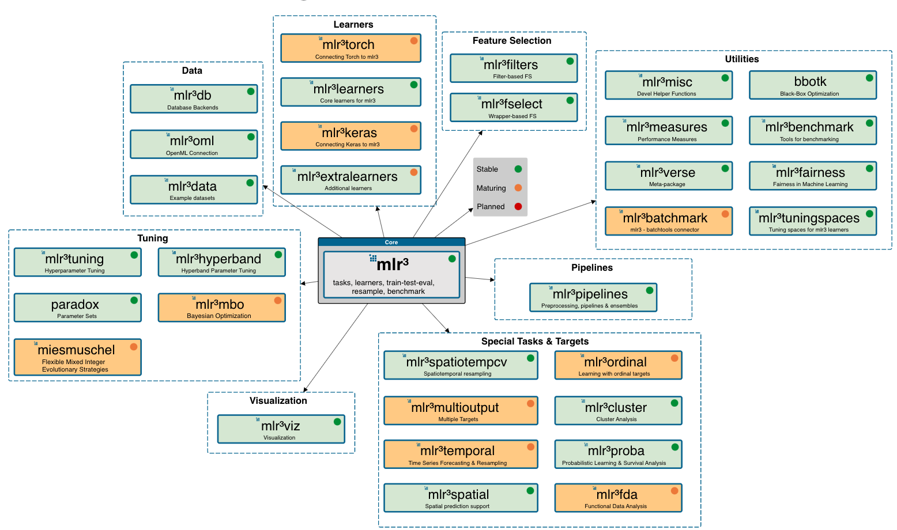

task = TaskClassif$new("xxx") # Objects
task$new() # Methods
task$feature_names # FieldsContents
- Introduction
- Syntax
- Basic modeling
- Resampling
- Benchmarking
Introduction
Who am I?
- Graduate School of Public Health, SNU (2019.03 ~ 2021.02)
- Seoul Nastional University Bundang Hospital (2021.06 ~ )
- Data (NHIS, MIMIC-IV, Registry data, KNHNAES …)
- Comento mentor (R for healthcare) (2022.07 ~ )
ML framework in R


What is mlr3?
mlr3: Machine Learning in R 3
mlr3 & mlr3verse

Why mlr3?
National Health Insurance System Data (NHIS-HEALS, NHIS-NSC)
dplyr\(\rightarrow\)data.tablePython:scikit-learn=R:??mlr3:data.tablebased package
Syntax
mlr3 vs tidymodels
Core 1. R6
Object Oriented Programming (OOP)
- Objects:
foo = bar$new() - Methods:
$new() - Fields:
$baz
Core 2. data.table
DT[i >= 10] # filter rows
DT[, .(X,Y)] # select columns
DT[, mean(X), by=Y] # aggregate by groupUtils 1. Dictionary
# Getting a specific object with `$get(key)`
mlr_learners$get("regr.rpart")<LearnerRegrRpart:regr.rpart>: Regression Tree
* Model: -
* Parameters: xval=0
* Packages: mlr3, rpart
* Predict Types: [response]
* Feature Types: logical, integer, numeric, factor, ordered
* Properties: importance, missings, selected_features, weights# Searching objects with $keys()
mlr_measures$keys() |> head()[1] "aic" "bic" "classif.acc" "classif.auc"
[5] "classif.bacc" "classif.bbrier"# OR with `as.data.table()`
as.data.table(mlr_learners) |> head()| key | label | task_type | feature_types | packages | properties | predict_types |
|---|---|---|---|---|---|---|
| classif.cv_glmnet | NA | classif | logical, integer, numeric | mlr3 , mlr3learners, glmnet | multiclass , selected_features, twoclass , weights | response, prob |
| classif.debug | Debug Learner for Classification | classif | logical , integer , numeric , character, factor , ordered | mlr3 | hotstart_forward, missings , multiclass , twoclass | response, prob |
| classif.featureless | Featureless Classification Learner | classif | logical , integer , numeric , character, factor , ordered , POSIXct | mlr3 | featureless , importance , missings , multiclass , selected_features, twoclass | response, prob |
| classif.glmnet | NA | classif | logical, integer, numeric | mlr3 , mlr3learners, glmnet | multiclass, twoclass , weights | response, prob |
| classif.kknn | NA | classif | logical, integer, numeric, factor , ordered | mlr3 , mlr3learners, kknn | multiclass, twoclass | response, prob |
| classif.lda | NA | classif | logical, integer, numeric, factor , ordered | mlr3 , mlr3learners, MASS | multiclass, twoclass , weights | response, prob |
Utils 2. Sugar functions
R6class \(\rightarrow\)S3type functions
Utils 3. mlr3viz
autoplot()visualization
autoplot(pred)
autoplot(pred, type="roc")Basic modeling
Ask ChatGPT!

1. Tasks
- Objects with data and metadata
- Default datasets
- Dictionary:
mlr_tasks - Sugar function:
tsk()
# R6 methods
# mlr_tasks$get("titanic")
# Sugar function
task = tsk("german_credit")Or External data as task
as_task_regr(): regressionas_task_classif(): classificationas_task_clust(): clustering
task_mtcars = as_task_regr(mtcars,
target = "mpg")
task_mtcars<TaskRegr:mtcars> (32 x 11)
* Target: mpg
* Properties: -
* Features (10):
- dbl (10): am, carb, cyl, disp, drat, gear, hp, qsec, vs, wtFields of tasks ::: {.fragment}
- Feature names
task$feature_names [1] "age" "amount"
[3] "credit_history" "duration"
[5] "employment_duration" "foreign_worker"
[7] "housing" "installment_rate"
[9] "job" "number_credits"
[11] "other_debtors" "other_installment_plans"
[13] "people_liable" "personal_status_sex"
[15] "present_residence" "property"
[17] "purpose" "savings"
[19] "status" "telephone" :::
- Target names
task$target_names[1] "credit_risk"- Target classes
task$class_names[1] "good" "bad" 2. Learners
- ML algorithms
- Dictionary:
mlr_learners - Sugar function:
lrn() - regression (
regr.~), classification(classif.~), and clustering (clust.~) library(mlr3learners)
Extra learners
- only through
githubnot CRAN - e.g.,
lightGBM
# remotes::install_github("mlr-org/mlr3extralearners@*release")
library(mlr3extralearners)$train(),$predict()
confusion matrix
prediction$confusion truth
response good bad
good 184 45
bad 26 45Or with mlr3viz
autoplot(prediction)Hyperparameter
# with learner
learner = lrn("classif.rpart", maxdepth = 1)
# Or
learner$param_set$set_values(xval = 2, maxdepth=3, cp=.5)
learner$param_set$values$xval
[1] 2
$maxdepth
[1] 3
$cp
[1] 0.5
Setting hyperparameters
$param_setof learners- setting class, lower, upper
as.data.table(learner$param_set) |> head()| id | class | lower | upper | levels | nlevels | is_bounded | special_vals | default | storage_type | tags |
|---|---|---|---|---|---|---|---|---|---|---|
| cp | ParamDbl | 0 | 1 | NULL | Inf | TRUE | NULL | 0.01 | numeric | train |
| keep_model | ParamLgl | NA | NA | TRUE, FALSE | 2 | TRUE | NULL | FALSE | logical | train |
| maxcompete | ParamInt | 0 | Inf | NULL | Inf | FALSE | NULL | 4 | integer | train |
| maxdepth | ParamInt | 1 | 30 | NULL | 30 | TRUE | NULL | 30 | integer | train |
| maxsurrogate | ParamInt | 0 | Inf | NULL | Inf | FALSE | NULL | 5 | integer | train |
| minbucket | ParamInt | 1 | Inf | NULL | Inf | FALSE | NULL | <environment: 0x10e5fea30> | integer | train |
3. Measures
- Evaluation of performances
- Dictionary:
mlr_measures - Sugar function:
msr(),msrs() classif.~,regr.~$score()
as.data.table(mlr_measures) |> head()| key | label | task_type | packages | predict_type | task_properties |
|---|---|---|---|---|---|
| aic | Akaike Information Criterion | NA | mlr3 | NA | |
| bic | Bayesian Information Criterion | NA | mlr3 | NA | |
| classif.acc | Classification Accuracy | classif | mlr3 , mlr3measures | response | |
| classif.auc | Area Under the ROC Curve | classif | mlr3 , mlr3measures | prob | twoclass |
| classif.bacc | Balanced Accuracy | classif | mlr3 , mlr3measures | response | |
| classif.bbrier | Binary Brier Score | classif | mlr3 , mlr3measures | prob | twoclass |
msr(): a single performance
measure = msr("classif.acc")
prediction$score(measure)classif.acc
0.7633333 msrs(): multiple performances
# Multiple measurements
measures = msrs(c("classif.acc","classif.ppv","classif.npv","classif.auc"))
prediction$score(measures)classif.acc classif.ppv classif.npv classif.auc
0.7633333 0.8034934 0.6338028 0.7558730 Resampling
Concept of Resampling
- Split available data into multiple training and test sets
- Reliable performance
- Prevent Overfitting
tidymodels vs mlr3

- Dictionary:
mlr_resamplings - Sugar function:
rsmp()
as.data.table(mlr_resamplings)| key | label | params | iters |
|---|---|---|---|
| bootstrap | Bootstrap | ratio , repeats | 30 |
| custom | Custom Splits | NA | |
| custom_cv | Custom Split Cross-Validation | NA | |
| cv | Cross-Validation | folds | 10 |
| holdout | Holdout | ratio | 1 |
| insample | Insample Resampling | 1 | |
| loo | Leave-One-Out | NA | |
| repeated_cv | Repeated Cross-Validation | folds , repeats | 100 |
| subsampling | Subsampling | ratio , repeats | 30 |
resample(): initiate resampling$aggregate(): aggregate resampling performance
task = tsk("german_credit")
learner = lrn("classif.ranger", predict_type="prob")
resample = rsmp("cv", folds=10)
rr = resample(task, learner, resample, store_model=T)
measures = msrs(c("classif.acc","classif.ppv","classif.npv","classif.auc"))
rr$aggregate(measures)classif.acc classif.ppv classif.npv classif.auc
0.7710000 0.7890524 0.6956910 0.7979774 Resampling result
autoplot(rr, type="boxplot", measure = msr("classif.acc"))
autoplot(rr, type="histogram", measure = msr("classif.acc"))Benchmarking
tidymodels vs mlr3

Benchmarking
- Comparison of multiple learners on a single task (or multiple tasks).
benchmark_grid(): design a benchmarking
tasks = tsks(c("german_credit", "sonar", "breast_cancer"))
learners = list(
lrn("classif.log_reg", predict_type="prob", id="LR"),
lrn("classif.rpart", predict_type="prob", id="DT"),
lrn("classif.ranger", predict_type="prob", id="RF")
)
rsmp = rsmp("cv", folds=5)
design = benchmark_grid(
tasks = tasks,
learners = learners,
resamplings = rsmp)benchmark(): execute benchmarking
bmr = benchmark(design)
measures = msrs(c("classif.acc","classif.ppv", "classif.npv", "classif.auc"))
as.data.table(bmr$aggregate(measures))[,-c("nr","resample_result","resampling_id","iters")] |> DT()| task_id | learner_id | classif.acc | classif.ppv | classif.npv | classif.auc |
|---|---|---|---|---|---|
| german_credit | LR | 0.7540000 | 0.7959935 | 0.6128794 | 0.7682786 |
| german_credit | DT | 0.7220000 | 0.7720000 | 0.5715187 | 0.7009023 |
| german_credit | RF | 0.7670000 | 0.7866093 | 0.6820459 | 0.7916496 |
| sonar | LR | 0.7027875 | 0.7229497 | 0.6805154 | 0.7122449 |
| sonar | DT | 0.7262485 | 0.7250771 | 0.7382659 | 0.7524838 |
| sonar | RF | 0.8174216 | 0.8101012 | 0.8425397 | 0.9232502 |
| breast_cancer | LR | 0.9252791 | 0.9361270 | 0.9195608 | 0.9418515 |
| breast_cancer | DT | 0.9502362 | 0.9167371 | 0.9675106 | 0.9543396 |
| breast_cancer | RF | 0.9751181 | 0.9549859 | 0.9860113 | 0.9938067 |
Result
task = tsk("german_credit")
learners = list(
lrn("classif.log_reg", predict_type="prob"),
lrn("classif.rpart", predict_type="prob"),
lrn("classif.ranger", predict_type="prob")
)
cv10 = rsmp("cv", folds=10)
design = benchmark_grid(
task = task,
learners = learners,
resamplings = cv10)
bmr = benchmark(design)
autoplot(bmr, measure = msr("classif.auc"))ROC & PRC
autoplot(bmr, type = "roc")
autoplot(bmr, type = "prc")More about mlr3
- Hyperparameter optimization
- Feature selection
- ML pipelines
Summary
mlr3
R6,data.tablebased ML framework- Sugar function + Dictionary
- Task, Learner, Measure
- Resampling
- Benchmarking
- Still in development (ver 0.16.0)
- A great textbook: mlr3book